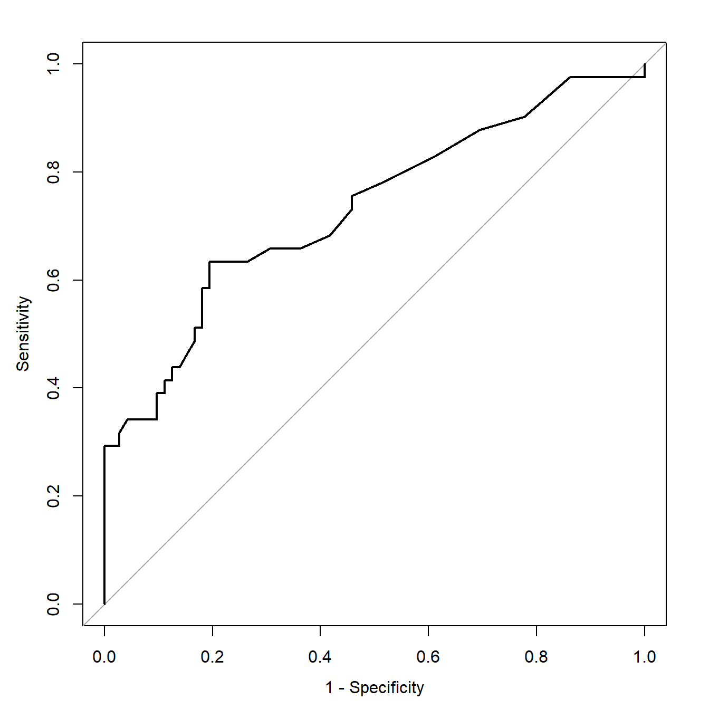
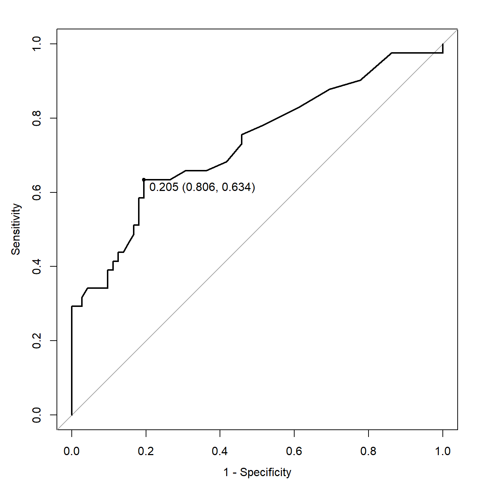
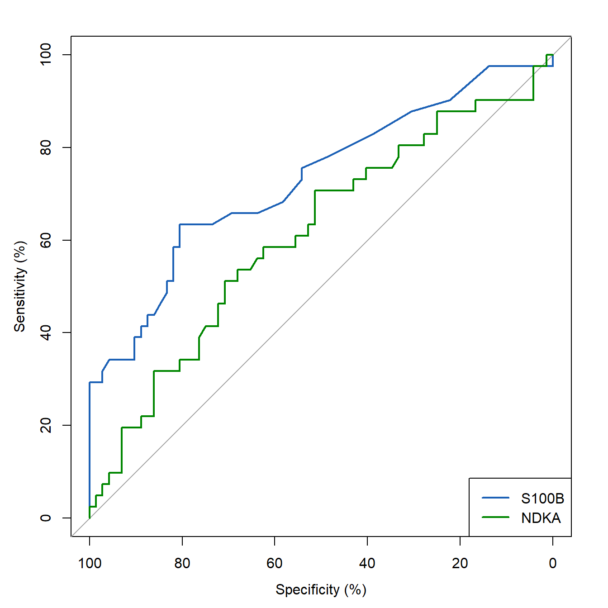
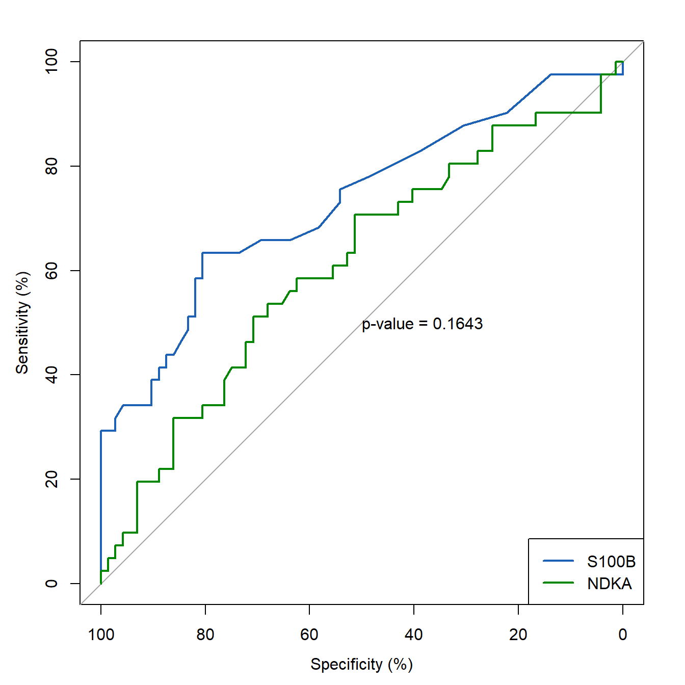
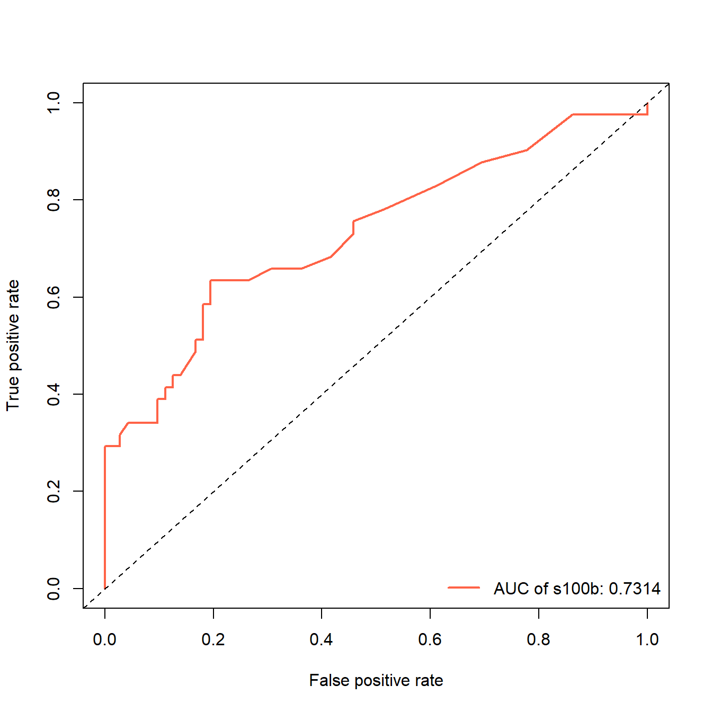
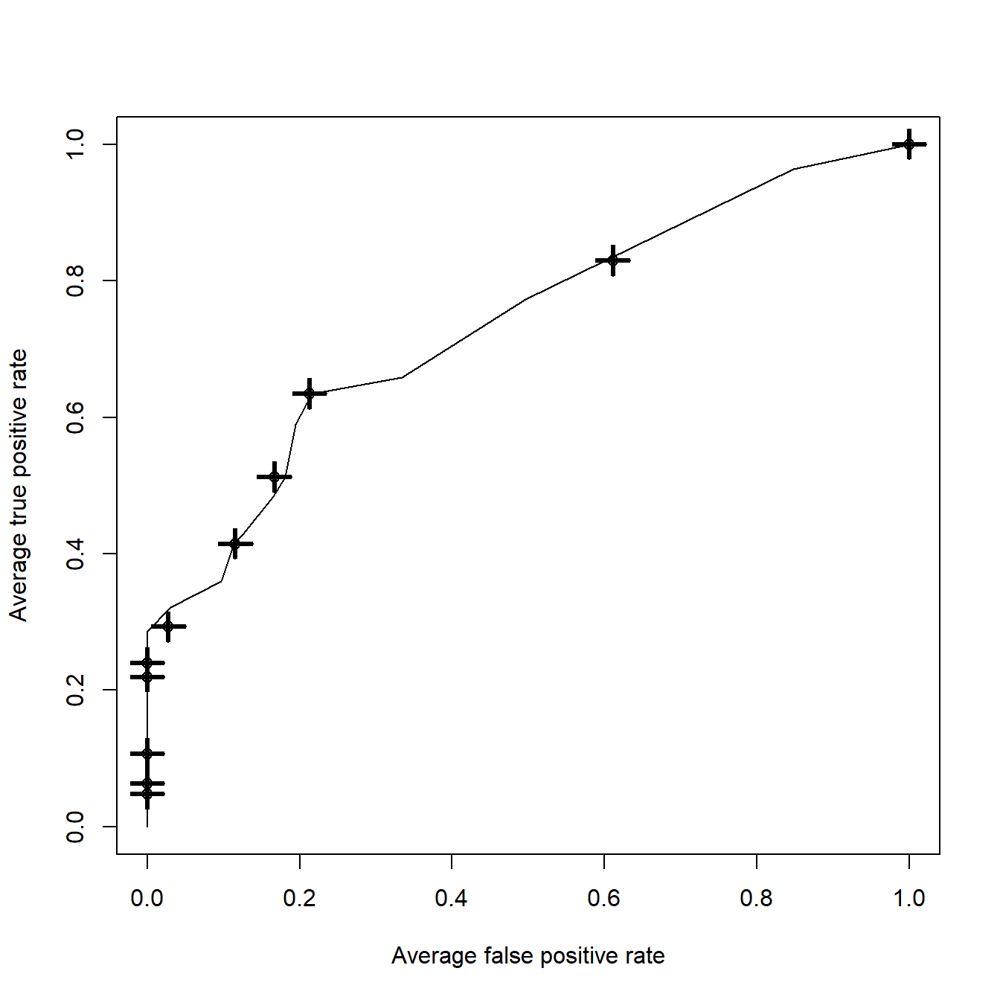
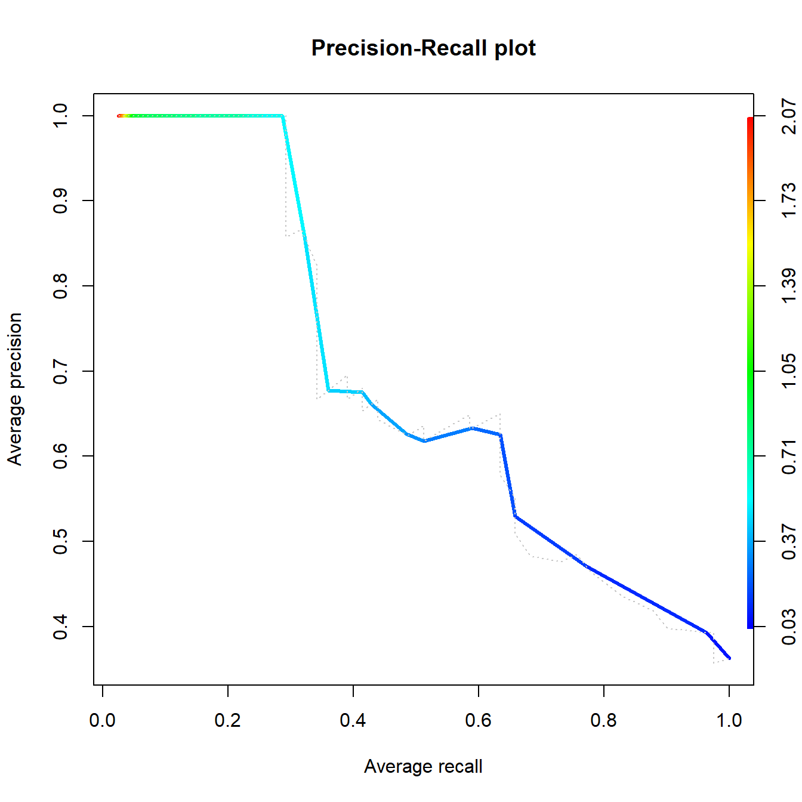
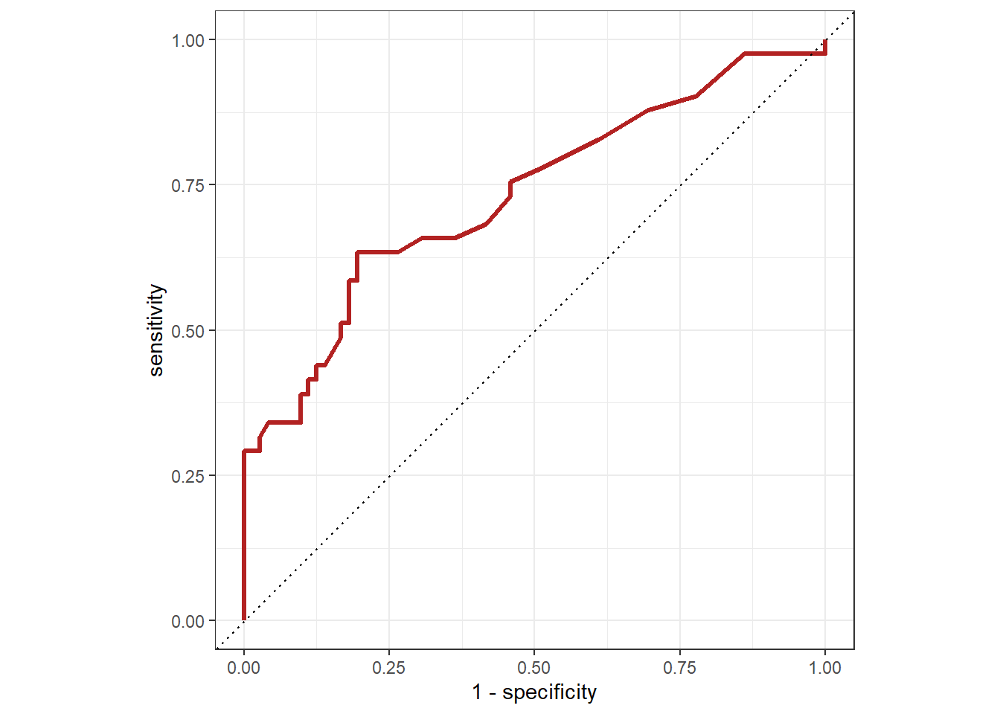

library(pROC)
data(aSAH)
dim(aSAH)
## [1] 113 7
str(aSAH)
## 'data.frame': 113 obs. of 7 variables:
## $ gos6 : Ord.factor w/ 5 levels "1"<"2"<"3"<"4"<..: 5 5 5 5 1 1 4 1 5 4 ...
## $ outcome: Factor w/ 2 levels "Good","Poor": 1 1 1 1 2 2 1 2 1 1 ...
## $ gender : Factor w/ 2 levels "Male","Female": 2 2 2 2 2 1 1 1 2 2 ...
## $ age : int 42 37 42 27 42 48 57 41 49 75 ...
## $ wfns : Ord.factor w/ 5 levels "1"<"2"<"3"<"4"<..: 1 1 1 1 3 2 5 4 1 2 ...
## $ s100b : num 0.13 0.14 0.1 0.04 0.13 0.1 0.47 0.16 0.18 0.1 ...
## $ ndka : num 3.01 8.54 8.09 10.42 17.4 ...21 二分类ROC曲线绘制
R语言中有非常多的R包可以绘制ROC曲线，但是基本上都是至少需要2列数据，一列是真实结果，另一列是预测值，有了这两列数据，就可以轻松使用各种方法画出ROC曲线并计算AUC。
这篇文章带大家介绍最常见的并且好用的二分类变量的ROC曲线画法。
21.1 方法1：pROC
使用pROC包，这个R包的功能非常强大，我这里只演示它的绘制ROC曲线以及计算AUC的功能，关于这个R包的详细使用，请参考文章：用pROC实现ROC曲线分析，关于pROC的使用在最后一章有详细介绍。
这个包的使用有一些注意点如下：
- 一定要指定direction，否则可能会得出错误的结果。
- 这个R包计算AUC是基于中位数的，哪一组的中位数大就计算哪一组的AUC。
- 它可以绘制带有置信区间的ROC，但是并不是大家想要的那一种，具体请参考上面的文章
使用pROC包的aSAH数据，其中outcome列是结果变量，1代表Good，2代表Poor。这是一个动脉瘤性蛛网膜下腔出血的数据集，一共113行，7列。其中：
gos6：格拉斯哥量表评分outcome：结果变量gender：性别age：年龄wfns：世界神经外科医师联合会公认的神经学量表评分s100b：生物标志物ndka：生物标志物
计算AUC及可信区间：
res <- roc(aSAH$outcome,aSAH$s100b,ci=T,auc=T)
res
##
## Call:
## roc.default(response = aSAH$outcome, predictor = aSAH$s100b, auc = T, ci = T)
##
## Data: aSAH$s100b in 72 controls (aSAH$outcome Good) < 41 cases (aSAH$outcome Poor).
## Area under the curve: 0.7314
## 95% CI: 0.6301-0.8326 (DeLong)绘制ROC曲线：
plot(res,legacy.axes = TRUE)
可以显示最佳截点（最佳截点的问题后续章节会详细介绍），比如AUC最大的点：
plot(res,
legacy.axes = TRUE,
thresholds="best", # AUC最大的点
print.thres="best") 
多条ROC曲线画在一起：
rocobj1 <- plot.roc(aSAH$outcome, aSAH$s100,percent=TRUE, col="#1c61b6")
rocobj2 <- lines.roc(aSAH$outcome, aSAH$ndka, percent=TRUE, col="#008600")
legend("bottomright", legend=c("S100B", "NDKA"),
col=c("#1c61b6", "#008600"), lwd=2)
两条ROC曲线的比较，可以添加P值：
rocobj1 <- plot.roc(aSAH$outcome, aSAH$s100,percent=TRUE, col="#1c61b6")
rocobj2 <- lines.roc(aSAH$outcome, aSAH$ndka, percent=TRUE, col="#008600")
legend("bottomright", legend=c("S100B", "NDKA"),
col=c("#1c61b6", "#008600"), lwd=2)
testobj <- roc.test(rocobj1, rocobj2)
text(50, 50, labels=paste("p-value =",format.pval(testobj$p.value)),
adj=c(0, .5))
21.2 方法2：ROCR
使用ROCR，如果你只是为了画一条ROC曲线，这是我最推荐的方法了，美观又简单！
library(ROCR)使用非常简单，3句代码，其中第2句是关键，可以更改各种参数，然后就可以画出各种不同的图形：
pred <- prediction(aSAH$s100b,aSAH$outcome)
perf <- performance(pred, "tpr","fpr")
auc <- round(performance(pred, "auc")@y.values[[1]],digits = 4)
plot(perf,lwd=2,col="tomato")
abline(0,1,lty=2)
legend("bottomright", legend="AUC of s100b: 0.7314",
col="tomato", lwd=2,bty = "n")
添加箱线图：
perf <- performance(pred, "tpr", "fpr")
perf
## A performance instance
## 'False positive rate' vs. 'True positive rate' (alpha: 'Cutoff')
## with 51 data points
plot(perf,
avg="threshold",
spread.estimate="boxplot")
还可以绘制PR曲线，召回率recall为横坐标，精确率precision 为纵坐标：
perf <- performance(pred, "prec", "rec")
plot(perf,
avg= "threshold",
colorize=TRUE,
lwd= 3,
main= "Precision-Recall plot")
plot(perf,
lty=3,
col="grey78",
add=TRUE)
这个包还可以计算非常多其他的指标，各种图都能画，大家可以自己探索。
21.3 方法3：yardstick
使用yardstick，它是tidymodels的核心R包之一，tidymodels是R中专门做机器学习和统计建模的，可以到公众号：医学和生信笔记，后台回复tidymodels查看更多关于它的教程，它也是目前R语言机器学习领域两大当红辣子鸡之一！另一个是mlr3。
library(yardstick)
library(ggplot2)它很优雅，如果你要计算AUC，那么就是roc_auc()函数：
aSAH |> roc_auc(outcome, s100b,event_level="second")
## # A tibble: 1 × 3
## .metric .estimator .estimate
## <chr> <chr> <dbl>
## 1 roc_auc binary 0.731如果你是要画ROC曲线，那么就是roc_curve()函数：
aSAH |> roc_curve(outcome, s100b,event_level="second") |>
ggplot(aes(x = 1 - specificity, y = sensitivity)) +
geom_path(size=1.2,color="firebrick") +
geom_abline(lty = 3) +
coord_equal() +
theme_bw()
还有太多方法可以画ROC了，不过pROC和ROCR基本上能解决99%的问题了。
最后，给大家看看cran中比较常见的画ROC曲线的包，大家有兴趣可以自己探索：
library(pkgsearch)
library(dplyr)
rocPkg <- pkg_search(query="ROC",size=200)
rocPkgShort <- rocPkg |>
filter(maintainer_name != "ORPHANED") |>
select(score, package, downloads_last_month) |>
arrange(desc(downloads_last_month))
head(rocPkgShort,20)
## # A data frame: 20 × 3
## score package downloads_last_month
## * <dbl> <chr> <int>
## 1 12743. pROC 151995
## 2 961. ROCR 57388
## 3 2866. PRROC 12230
## 4 432. riskRegression 8820
## 5 410. PresenceAbsence 3378
## 6 1992. plotROC 3155
## 7 2291. cvAUC 2955
## 8 526. ROCit 2663
## 9 2021. survivalROC 2661
## 10 1818. timeROC 2653
## 11 2024. precrec 1859
## 12 218. logcondens 1829
## 13 190. WVPlots 1583
## 14 164. PredictABEL 869
## 15 190. RISCA 706
## 16 220. hmeasure 681
## 17 159. cubfits 659
## 18 1599. plotwidgets 654
## 19 137. ThresholdROCsurvival 649
## 20 1000. ROCnReg 643pROC高居榜首，遥遥领先！
21.4 推荐阅读
ROC曲线的其他问题可参考以下推文：
- 多时间点和多指标的ROC曲线
- 临床预测模型之二分类资料ROC曲线的绘制
- 临床预测模型之生存资料ROC曲线的绘制
- ROC曲线(AUC)的显著性检验
- 生存资料ROC曲线的最佳截点和平滑曲线
- ROC曲线纯手工绘制
- R语言计算AUC(ROC曲线)的注意事项
- ROC阴性结果还是阳性结果
- 多指标联合诊断的ROC曲线
- ROC曲线最佳截点
- bootstrap ROC/AUC
- R语言多分类ROC曲线绘制
公众号后台回复ROC即可获取以上合集链接。